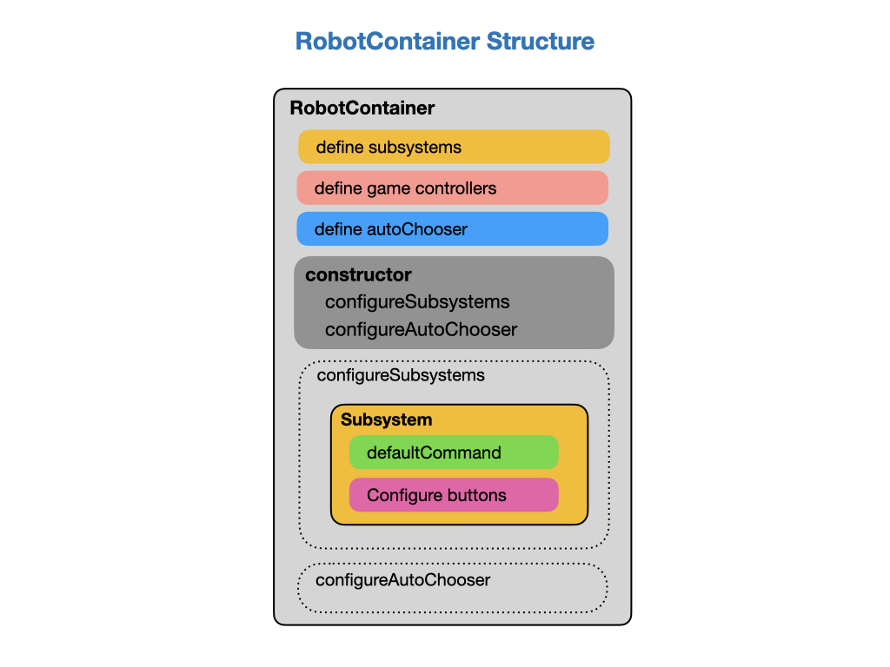

Robot Structure
The structure of the competition roboRIO robot is very similar to that of the example code you have been working with. The subsystems, game controllers, and AutoChooser menu are all defined within the RobotContainer class above its constructor. The subsystems are configured when the RobotContainer object is constructed. Each subsystem will designate its default command, which is the command that runs when no other command is using the subsystem, and setup any game controller buttons that are used to control the subsystem.
The autoChooser menu is also created when the RobotContainer object is built. The autoChooser menu is used to select an autonomous command. The general structure of the RobotContainer class is show below.

The game controllers will be mapped to commands in the configureBindings method in the RobotContainer class. You’ll learn how to do this in the Joysticks and Game Controllers tutorial.
Lab - Robot Structure
The purpose of this lab is to learn about the roboRIO training robot’s code structure and practice deploying your own code to the robot. There are four tasks for this lab:
Fork the Sweetpants2024 program for the roboRIO training robot into your own Github account.
Clone to Sweetpants2024 program to your laptop.
Learn about the roboRIO training robot and it’s code structure.
Drive the Sweetpants training robot from your own laptop. Execute the AutonomousTime and AutonomousDistance command to ensure that they work. Then drive the robot around with a game controller.
### Fork the Reference Program We’re going to start our training on the roboRIO robots by Forking a reference program for a robot that we call Sweetpants. This will put a copy of the program into your own Github account so as you can make changes to it.
Navigate to the [Sweetpants2024](https://github.com/FRC-2928/Sweetpants2024) program for the training roboRIO robot.
Follow the instructions on [Forking a Repository](../Tools/git.md#gitFork) to get a copy of the program into your own Github account.
Check your Github account to ensure that the new repository has been copied. While you’re there copy the repository URL by clicking on the Code button.
You’re now done with this task!
### Clone the Reference Program Now that you have a copy of the reference program in your own Github repository you can clone it onto your laptop and make changes to it.
In VSCode, clone the reference program for the roboRIO training robot from your own Sweetpants2024 repository. For a reminder on how to do this refer to Cloning a Repository(../Tools/git.md#gitClone).
Once you have your own personal of the reference program you’re done with this task!
### Learn about the roboRIO Robot The purpose of this task is to familiarize youself with the roboRIO robot. We’ll look at the code structure and also take a some physical measurements of the robot so as we can use them in our code.
Look at the RobotContainer class in VSCode and identify each code block that’s shown in the RobotContainer Structure image above.
Look at the Drivetrain class and examine the getAvgDistanceMeters() method. Calculating this return value is a little more complex than on the Romi. This is because the roboRIO training robot has a transmission, which changes the distance calculation depending on whether it’s in high or low gear. Try and follow the code through and understand how the distance is calculated.
Measure the track width, wheel diameter, and wheel width on the Sweetpants robot and create or confirm the constants kTrackWidthMeters, kWheelDiameterMeters, and kWheelWidthMeters in the Constants file.
Sometimes we’ll want to turn the robot on the spot, so it would be useful to know how far each wheel has to turn to represent one degree of rotation of the robot. This is why we need kTrackWidthMeters. The calulation for this is done in the following diagram. Note that this is an example, you’ll need to get the actual track width measurement from the robot.

The meters per/degree calculation appears in the isFinished() method of the TurnDegrees command.
public boolean isFinished() {
double metersPerDegree = Math.PI * DrivetrainConstants.kTrackWidthMeters / 360;
// Compare distance travelled from start to distance based on degree turn
return getAverageTurningDistance() >= (metersPerDegree * m_degrees);
}
The distance needs to be averaged over the two wheels, which is done in the getAverageTurningDistance() method of the TurnDegrees command.
private double getAverageTurningDistance() {
double leftDistance = Math.abs(m_drive.getLeftDistanceMeters());
double rightDistance = Math.abs(m_drive.getRightDistanceMeters());
return (leftDistance + rightDistance) / 2.0;
}
After taking the measurements and reviewing the code you’re done with this task!
### Drive the Sweetpants Training Robot In this task you’ll drive the Sweetpants robot from your own laptop using the Sweetpants2024 code that you copied into your Github repository. If you don’t have a Windows laptop you can use one of the team laptops.
Connect to the robot and run the DriverStation. See [Understand the Driver Station](driverStation.md#dsUnderstand) from the previous lab.
Deploy the Sweetpants2024 code from your laptop. See [Deploy Robot Code](driverStation.md#dsUnderstand) from the previous lab.
Execute the AutonomousDistance command from the SendableChooser menu by selecting Autonomous mode from the DriverStation and «Enabling» the robot. This command does the same thing as the AutonomousDistance command on the Romi. It drives forward, turns 180 degrees, drives back, and turns another 180 degrees. The last two steps of the command have been commented out, since we want to ensure that the robot turns approximately 180 degrees before doing the return leg of the trip. Once You’ve confirmed that the robot is pointing in the right direction you can uncomment the last two sequential commands.
Do the same test for the AutonomousTime command. You’ll have to startup Shuffleboard so as you can select the command, since AutonomousTime is not the default command.
Connect a game controller to your laptop and drive the robot around.
You’re now done with this task!
References
Example code [Sweetpants2024](https://github.com/FRC-2928/Sweetpants2024)